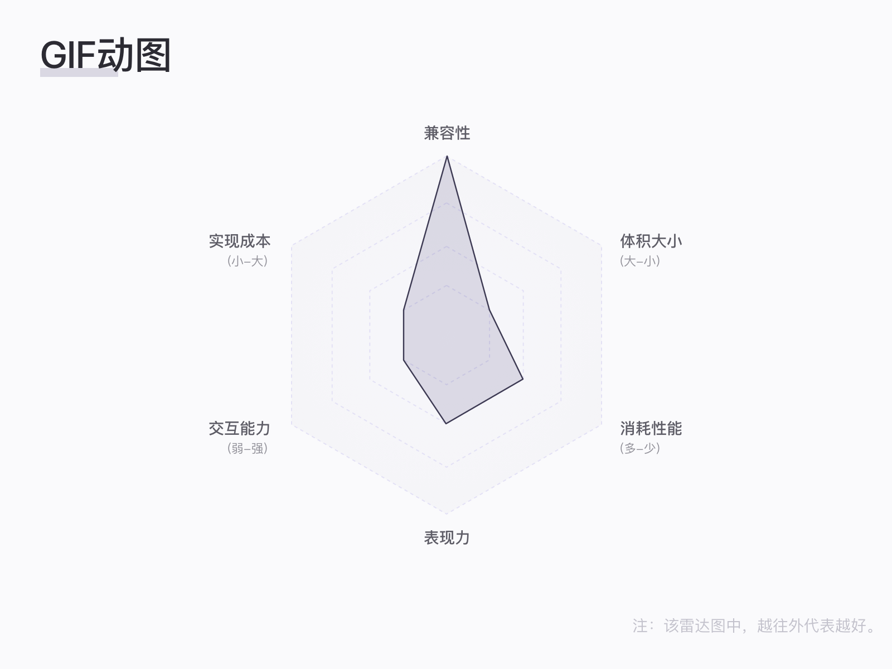
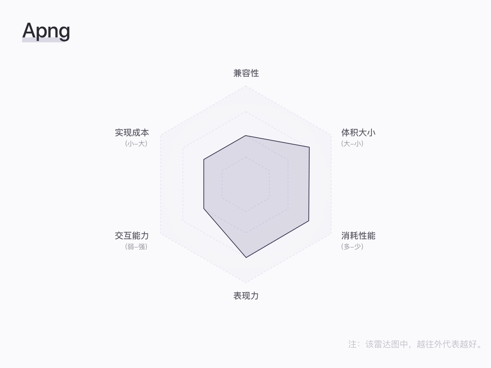
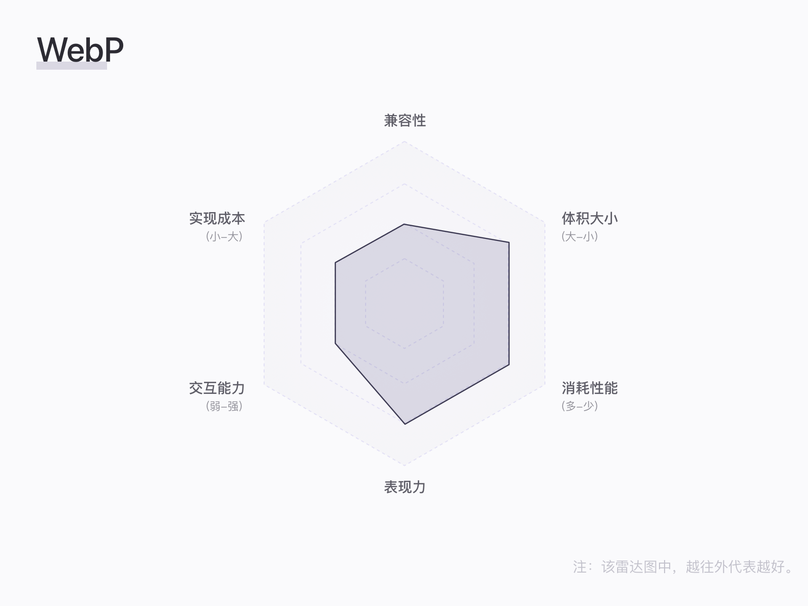
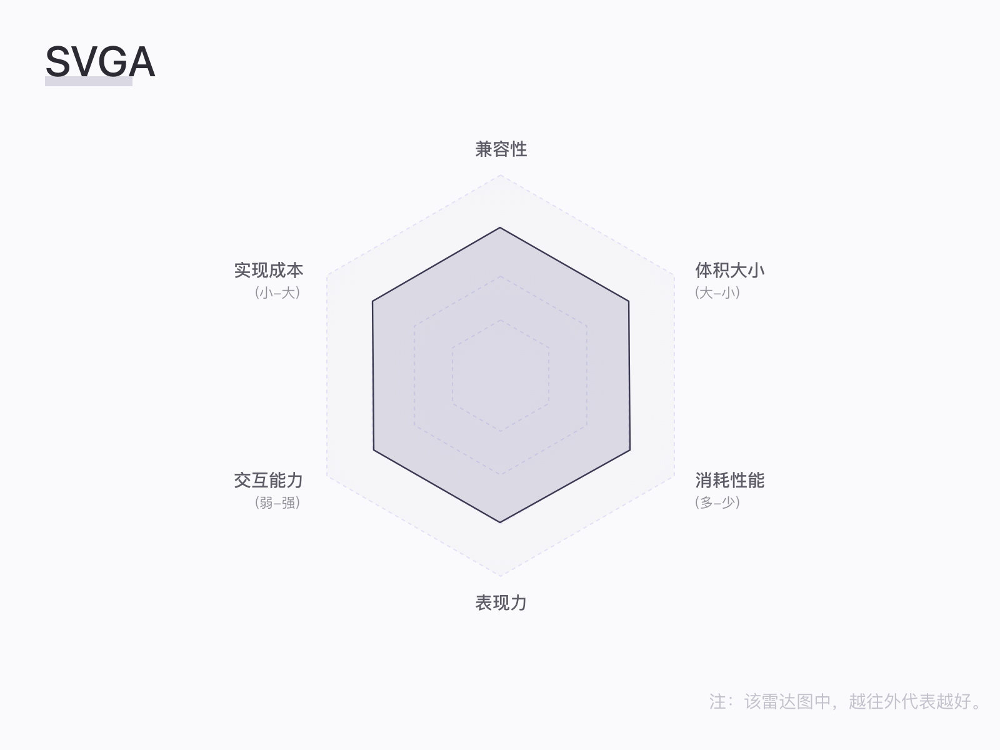
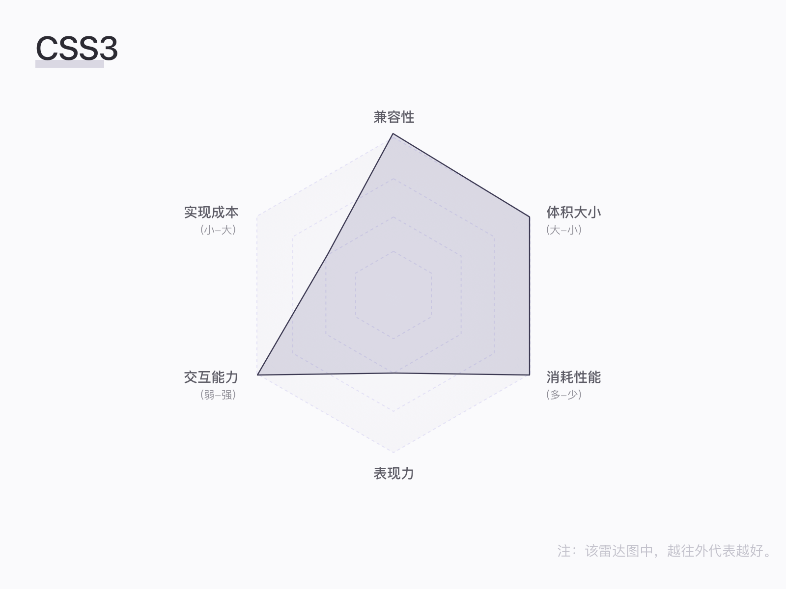

动效如何在工作中更好的落地
最近在网上看了一个大佬（@進擊の皮蛋）的公开课，讲了一些“动效落地”的内容，听完收获良多；之后，我又和前端同事讨论下，如何具体去操作。
动效主要分为两种：
展示型动效：
例如loading效果、tab切换效果、直播间送礼物等，不涉及到交互操作。
交互性动效：
例如加入外卖app点餐加入购物车。
接下来，我会逐个展示，不同种类的动效如何落地的具体过程。
展示型动效
GIF
优点：
兼容性好，前端不用工作量
缺点：
颜色不丰富、alpha通道有锯齿、多gif会卡顿、没有交互能力、文件较大
如何实现：
1.PS：ae导出为png序列，在ps中打开序列，帧速率保持一致
2.gif brewery：视频直接导入，操作友好
3.ezgif.com

精灵图、序列帧
优点：
无损压缩、alpha通道、颜色丰富、前端可以自由控制
缺点：
安装包变大，网速不佳时体验不好
如何实现：
1.ae插件：css-sprite-exporter
2.ae插件：BX-AE2CSS
Apng
Apple开发的图片格式
优点：
无损压缩、alpha通道、比gif小30%的体积
缺点：
兼容性问题（主要支持iOS）、无法交互操作、体积较大
如何实现：
1.iSparta：用序列帧去输出apng
2.BX-Webp/Apng Exporter：AE插件输出

WebP
Google开发的图片格式
优点：
无损压缩、alpha通道、小体积
缺点：
兼容性问题（主要支持google）、无法交互操作、体积较大
如何实现：
1.iSparta：用序列帧去输出WebP
2.BX-Webp/Apng Exporter：AE插件输出

Video
优点：
优点：效果好，边播放边加载
缺点：
弱网络环境、耗电问题、交互能力弱、安卓系统可能会有bug
如何实现：
ae直接输出
Lottie
airbnbairbnb开源，利用json文件实现动画效果
优点：
多端支持、风格支持多（主要是矢量动画），前端可以设置交互操作的触发、支持服务端的替换、性能好
缺点：
AE效果有限、有位图的文件较大、关键帧与曲线算法可能会卡顿
如何实现：
ae插件bodymovin输出
SVGA
YY开源，利用ae插件导出
优点：
多端支持、拟物位图效果完美实现、性能提升
缺点：
ae中可以使用的效果有限，比lottie更少；复杂的粒子效果会有较大的体积；没有成熟的社区
如何实现：
ae插件SVGAconverter

CSS3
优点：
兼容性好、性能好、交互性好
缺点：
表现力一般（无法做光效、粒子）
如何实现：
1.前端直接实现
2.ae插件：BX-AE2CSS（输出稳定，前端几乎无工作量；只支持位图）

Canvas
优点：
兼容性强、体积小、表现力强、交互性强、性能更好
缺点：
实现成本高、复杂场景在手机上性能不佳
如何实现：
前端直接实现
WebGL
优点：
表现力强、交互性强
缺点：
成本高、性能要求高
如何实现：
前端直接实现
比较
上述就是把这些不同的实现方式都整合了一遍，为了可以更清晰的展示不同实现方式之间的差异，以及以后如何选择，我做了一张坐标图，可供参考：
交互型动效
所谓交互型的动效，指的就是这个动效的产生需要通过一定的人机交互才会出现，值得注意的是：我们一定是为了业务的需求，才会去做这个动效，而不是为了动效而动效。
动效量化
在交互型动效中，有三个关键点：
任何复杂的动效都是基于这三个变量进行组合：
变化：对象参数的变化
时间：动画的起始、结束时间
插值：变化多端数值随时间的变化曲线
因此，在做交互型动效时，需要给开发人员以下内容以供参考：
触发条件：手势、规则等
对象：产生动画的元素
属性：对象发生变化的具体值
时间：动画的起始结束时间
插值：动画的值曲线（需要使用ae的插件进行配合：motion2、flow；principle亦可）
彩蛋：动效设计师需要哪些技能
写了这么多，接下来要推荐一位大佬（@Guoen_0），他给了我很多启发。
在动效实现的时候，我们可以稍微关注下代码层面的内容，ae的画面能实现出来才是有价值的：
- processing
- codepen.io
- three.js
- Origami
此外，动效设计师有一份设计图谱，可能不求全部都精通，但是可以从中知道往哪个方向上靠：
Overview
文章写到这里就结束了，总的来说，动效落地需要设计师和程序员的深度沟通才能实现。
- 于动效设计师而言，不仅需要对画面的把控力，也需要对软件代码层有了解，知道什么时候用什么方式最好（画面效果+实现成本）。
- 对程序员来说，也需要有对美感和代码的功力。
the end